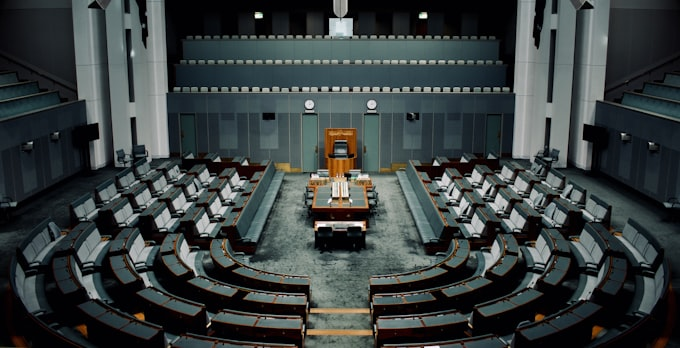

Political Headlines
April 14, 2026PLD Criticizes Government's RD$29 Billion Expenditure on Property Rentals Since 2021
The opposition party calls the multi-billion peso rental spending "wasteful" and questions why the government has not invested in building or acquiring permanent facilities.
The Partido de la Liberación Dominicana (PLD) criticized the current administration on Monday, stating that from 2021 to the present day, the government has paid over RD$29 billion in contracts for renting private properties. The party described the situation as an unacceptable use of public funds that, if extended over six full years, would represent an enormous financial burden on the state.
The announcement drew significant attention because it came during an ongoing national emergency caused by severe flooding — a timing that political analysts said reflected the opposition's intent to keep fiscal accountability in the public eye even during crises.
"The state is not using public funds responsibly when billions are spent renting spaces that could have been purchased or constructed at far lower cost."
— PLD Party Spokesperson, Monday Press Conference
The National Palace, seat of Dominican executive power.
More Political News
Abinader Reaffirms Integrity as State Strategy at Global Anti-Corruption Forum in Paris
The Dominican president participated in the international forum, highlighting his administration's commitment to transparency and good governance.
The Dominican government's anti-corruption agenda was presented at the global forum as a model for developing economies. President Abinader met with French business leaders who recognized the Dominican Republic as their primary investment destination in the Caribbean.

AI and Automation Raise New Questions About the Future of Labor Law in the Dominican Republic
Legal experts and economists debate the need to modernize Dominican labor legislation in response to rapid technological change and the growing use of artificial intelligence in the workplace.
Specialists warn that current labor frameworks may not be equipped to handle shifts in employment models driven by automation. Authorities believe new regulations will likely be necessary to protect workers' rights in the digital economy.